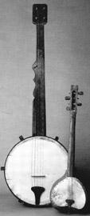
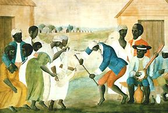
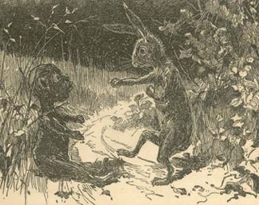

|
Only twenty-five years ago scholars debated whether slaves in the southern
United States had an identifiable culture, much less whether aspects of African
culture persisted in this country. Phrases like "cultural amnesia" were bandied
about, and it was widely assumed that the horrors of the Middle Passage--the
trip from Africa to America--combined with the harshness of plantation life in
the South, dehumanized and infantilized slaves to such an extent that they
became whatever whites wanted them to become. The search for "survivalisms," or
Africanisms, was almost entirely confined to vestigial words whose origins could
be traced back to African roots. The scholarship of the last twenty-five years
has transformed the debate and changed the terms of discussion, so much so that
Afro-American slave culture is now a given whose origins and richness are
explored in ever more sophisticated interdisciplinary studies.
African Origins
The origins of Afro-American culture are to be found in Africa, in Europe,
and in the New World, and the blend and relative strength of the diverse
|

Two banjos used by slaves. The smaller design is much more
African, the larger reflects an American influence.
|
components changed over time, varied from place to place, and were dependent on
factors ranging from birthrates and death rates to plantation size. There was no
one African culture; instead, West Africa, from which most slaves came,
supported a wide diversity of cultures separated from one another by geography
and language.
Those people most able to transmit African ways to America--ritual
specialists, mostly old people--were least likely to be brought here, and those
most apt to come--young males--were least knowledgeable about African culture.
Not only did white slaveholders actively discourage overt Africanisms when they
could recognize them and gauge their importance, but language and cultural
barriers among the slaves themselves slowed the sharing and fusion of folkways.
Nature, too, presented difficulties. The rituals and ceremonies that gave form
and substance to many aspects of African culture depended on a multiplicity of
ingredients--feathers, shells, the sap from certain trees, animal parts--all
chosen because some feature of the ingredient represented a precise value or
trait. In this land, with different flora and fauna, it was impossible to
transmit African rituals exactly even if ritual specialists had been available
and given freedom by the white authorities to practice their arts.
Nevertheless, despite the difficulties involved, a wide variety of African
cultural traits were transported to America, took root, merged with European and
Indian folkways and beliefs, and evolved into a distinct Afro-American culture
that incorporated features of the mix of cultures present in the colonies.
Generally speaking, those African traits that bore some resemblance to European
or Indian traits, and hence were reinforced by the similarities, were most apt
to survive, albeit often in a hybrid or syncretic form, in the New World. The
evolutionary process by which an Afro-American culture developed in the American
South is time-specific, for the institution of slavery itself changed
significantly over time and the temporal perspective must constantly be kept in
mind.
Some twenty-odd blacks arrived in Virginia in 1619, having been bartered for
provisions by sailors on a Dutch vessel. The ultimate fate of these Africans is
unknown, and a decade later only several dozen blacks lived in the colony. Most
of them seem to have been slaves, but others were apparently servants (whose
labor, but not person, was owned for several years), and at least a handful were
free blacks who themselves owned property (including servants and slaves),
served on juries, and may even have voted. By as late as mid-century there were
still only a couple of hundred blacks in the Chesapeake region; the labor force
remained overwhelmingly composed of white indentured servants. The few hundred
blacks, most having been transported from the West Indies and hence relatively
acculturated, lived interspersed with the much larger white work force. With one
or two blacks on scattered plantations often miles apart, with the settlements
separated by trackless forests and divided by unbridged rivers and estuaries,
with language barriers as uncrossable as the terrain, individual African slaves
found themselves isolated culturally and geographically, with practically no
sense of black community to nurture their fragile memories of Old World
folkways.
European Influences
Culture is best sustained and legitimated in a social framework; in the
absence of a supportive community, old ways are shuffled aside and new ways
grafted on. This is exactly what happened to African culture among blacks in the
first two generations of their experience in the mainland colonies. This
tendency was exacerbated by the small numbers of blacks and the degree of
acceptance they found among the white indentured servants. As long as there were
few blacks and those relatively acculturated from the West Indies, they seemed
neither shockingly strange nor threatening to the white majority. In fact, from
the planter perspective they hardly seemed distinguishable from the larger
working-class population with whom they lived, toiled, and died.
Correspondingly, from the perspective of white indentured servants, black slaves
seemed more like fellow workers than frightful heathens. As long as there were
only a few blacks, there was remarkable biracial harmony, and white and black
laborers socialized together in the first half century of the African experience
in the British mainland colonies. In this environment of white hegemony and
numerical dominance, overt African cultural traits faded as Africans adapted
European attitudes; blacks during the period from about 1625 to 1675 became more
Europeanized than at any other period perhaps before 1808. But forces were at
work that would change this situation.

Virginia slaves, in a painting from the
1750s
|
Almost imperceptibly the number and concentration of blacks continued to
increase, and simultaneously with population growth in general came better
roads, ferries, and bridges--improving communication among plantations. Blacks,
sprinkled in ones and twos across the vast countryside, not only became aware of
the presence of other blacks but were increasingly coming into contact with
them. African-based language barriers slowly were overcome as slaves developed a
pidgin language composed of bits of various African dialects as well as snatches
of English and Spanish. Underlying African grammatical principles incorporated
new vocabularies that facilitated communication between slaves and masters and,
more importantly, between slaves from different language groups. Breaking these
language barriers was the first step toward the creation of a black community in
the American South. Increased contact made it easier for blacks to find spouses
of the requisite age, and slowly a second generation of American-born slaves
developed. These "country-born" slaves were healthier than their parents,
reached menarche earlier, and found it easier--as one result of population
growth--to find spouses. The result was even greater population growth, and
these American-born slaves, with an equal sex ratio (unlike the imported
population of slaves who were mostly male), made possible the formation of slave
families and increases in population on a scale unknown before or anywhere else
in the Americas.
American-born slaves used the pidgin language of their parents as their
native tongue, so it became for them their native language, or, as linguists
say, the pidgin language was "creolized." While certain underlying African
grammatical principles remained constant, the vocabulary became increasingly
Europeanized. Through the process of creolization the surrounding English words
were incorporated into a linguistic structure that retained recognizable African
patterns--although neither slaves nor masters may have been aware of the
complexities involved. The growth of the slave population in the last decades of
the seventeenth and the early decades of the eighteenth centuries not only made
possible but made necessary the development of an Afro-American culture whose
process of evolution parallels the shift from pidgin to creole language. So long
as young, unattached males were the majority of slaves, with very limited family
formation and few children, there was little sense of a separate slave or
African culture--these slaves were being culturally incorporated into the white,
lower-class society. But with demographic changes making marriage and the growth
of families possible and even probable, a shift occurred. With wives and
children, young males now had reason to recover at least portions of their
cultural heritage. The presence of children especially made desirable the
rediscovery and practice of rituals, for births, adolescence, marriage, and
death demanded ritual and ceremonial acknowledgment. The increasing frequency of
slaves living in family groups provided not only the necessity for certain rites
of passage but an arena in which such cultural phenomena could develop.
The Emergence of Afro-American Slave Culture
By the second quarter of the eighteenth century this process was underway,
and various types of borrowings and bleedings from several African cultures as
|

This well-known painting shows slaves entertaining themselves
in their off hours.
|
well as the surrounding white and Indian cultures occurred. A slave man and wife
from different African cultures, for example, might have both acknowledged that
a certain stage of life required ritual celebration, but their backgrounds would
have prescribed different rites, and neither being a ritual specialist, they
would not have known precisely the correct ingredients or phrases, and even if
they had, the prerequisite flora and fauna did not exist in the New World. What
occurred, then, was a makeshift adaptation of hybrid African ceremonies in
America, with the actual rituals more African in concept than in performance.
American ingredients, even words, were drafted for duty as African cultural
instruments, with the result neither truly African nor American but a new
syncretistic creation, an Afro-American cultural invention. This process of
cultural blending became possible and necessary at approximately the same time,
and because the age cohort of slaves most involved was overwhelmingly
American-born, the emerging Afro-American culture was more European than that
elsewhere in the Americas, where the white presence was numerically so minimal
as to make almost no impress on the black culture. Yet just at this moment of
culture formation in the Southern colonies, roughly the period 1725-1775, came
the high point of African arrivals in the slave trade.
Thus, the creole culture in the process of development received, at the most
critical phase, a fresh infusion of African influences. The result was that the
culture of American slaves was both more African and more European than scholars
once realized. Slavery scholarship has long emphasized the last generation
before the Civil War, but it may well be that the fifty years before the
American Revolution were more important in shaping the slave culture. Certainly
in the decades after 1790 the American slave population was mostly
American-born, and gradually African influences became more covert, operating as
a kind of underlying grammar through which white European styles were expressed.
Those who saw the obvious European trappings of the slave culture seldom
understood the African patterns that determined how particular white cultural
components were utilized. To employ a linguistic metaphor, an African grammar
dictated the use of a white vocabulary, and this white vocabulary has made
recognition of the underlying principles of construction more difficult.
With this linguistic metaphor in mind as the model for slave culture, and
remembering the cultural changes over time--first a nearly Europeanized black
slave force, then one with a syncretistic Afro-American culture that gradually
saw its vocabulary components become increasingly Europeanized even while the
underlying African grammatical principles helped shape the resulting
folkways--it becomes possible to understand black history on the North American
mainland. African models of the extended family reemerged in the South, with
naming patterns and quasi-kinship practices surviving as reminders of African
ways. Slave women made quilts using available cloths, but the patterns sewed
into the quilts maintained continuities with African uses of irregular
rectangles.
Likewise, slaves in the rice-growing sea-island districts wove baskets out of
American materials for use in winnowing their master's rice, but the patterns
woven into the baskets bore clear resemblance to African styles. Pottery
remnants discovered in South Carolina, showing sparse use of colors and the
sometimes physiognomic shape, have definite African parallels. Slave folktales,
especially the Brer Rabbit stories, are populated with animal characters common
to the American South, but the genre of animal trickster tales was carried over
from many African cultures.
|

Brer Rabbit was central to much slave humor and folklore.
|
In the realms of music and song, dance, body language, food preparation (even
when much was borrowed, for example, from American Indians), housing styles (the
small size of slave cabins may have been as much a result of African conceptions
of appropriate housing space as the parsimony of the planters, and the shotgun
house and even the idea of a verandah may have come from Africa via Haiti),
agricultural techniques (almost certainly the manner of planting rice in the
Carolinas was brought from the African grain coast, and some herding practices
appear to have African antecedents), carving and metalworking styles, some
aspects of religious expression, all have an identifiable African cultural
heritage.
The survival and evolution of an Afro-American style was especially
noteworthy in those aspects of slave culture that seemed irrelevant to the
masters. For example, whites little noticed or cared what patterns were woven
into the winnowing baskets as long as the winnowing was done, nor did they
attach significance to the patterns slave women sewed into their quilts. In such
inconspicuous ways a rich panoply of Afro-American cultural and artistic styles
persisted, an achievement that helped slaves hold on to a spark of autonomy and
survive their bondage without being completely enslaved psychologically. Masters
were often only partially if at all aware of what was occurring right under
their noses.
Religion
Developments in slave religion were different, however, and require special
discussion, for masters often did care what kind of religious practices their
slaves performed. Slave folklore and folktales were considered heathenish,
naive, and of little import by whites; because they were "harmless," planters
did not bother to control or even monitor such beliefs. Since folk beliefs were
discussed almost entirely within the confines of the slave community, there was
little occasion for interaction between whites and blacks; consequently, while
slaves often incorporated concepts from white folk beliefs (various
superstitions, for example) that reinforced their own, the black folkloric
experience was more African than any other aspect of slave life. Slave religion
was a wholly different issue, for here--most whites agreed--it did matter what
slaves believed and practiced, and the normative slave religious experience was
biracial. In many respects the development of slave religion was analogous to
other cultural developments. Beginning in the mid-eighteenth century, slaves
adopted those aspects of Christianity that bore some resemblance to African
religion, and slave Christianity provided blacks with a sense of purpose and a
context of meaning for their lives. In other respects slave Christianity was a
unique aspect of black culture, for nowhere else in the black experience was the
impact of white values as influential.
Before about 1750 no appreciable slave Christianity existed in the Southern
colonies, but this was primarily because of the weakness of institutional
religion in the region. During the second quarter of the century especially, in
the face of heavy African importation, churchmen questioned the ability of
slaves to understand the Christian message. Such racist assumptions misled many
whites, for this period was also a time when the slave population was enjoying
rapid indigenous population growth with a corresponding increase in slave family
life, which also meant that the emerging slave community increasingly desired
the ritualistic and legitimating functions of religion. After about 1750 a
powerful surge of evangelical Protestantism developed in the Southern colonies,
with several series of small revivals (a Presbyterian, Baptist, then Methodist
phase of church growth) that eventually resulted in a Great Revival (1800-1805)
that ensured the dominance of evangelical Christianity in the region. These
evangelical groups, especially in their formative stages, welcomed black
participation and indeed sought out black converts and members. Moreover, the
style of religious expression in the evangelical churches was similar in
important ways to African traditional religion, easing the transition of
Africans from an African religious orientation to a Christian one. The African
background preconditioned slaves to be receptive to the kind of overtly
emotional religion they found within the evangelical sects.
In West Africa, from which most Southern slaves came, there was a great
diversity of cultures, languages, and religions, but there were also certain
underlying cultural similarities, especially in religion. Despite the variety of
titles, rituals, and beliefs, most West Africans had three types of
gods--ancestral spirits, nature spirits, and an omnipotent creator god.
Moreover, a common method of experiencing religion was called spirit possession,
a transforming emotional state wherein one was "seized" by the spirit. Religion
incorporated the believers into a larger community, joining contemporary
believers with each other and also with their ancestors, who were thought to be
still present. Worshipers often participated actively in the religious
ceremonies, with voice and body expression part of the communal experience of
the holy. Finally, water was involved in a number of African religious rites,
often being symbolic of life. This range of beliefs and practices predisposed
many Afro-Americans, torn from their comfortable spiritual world inhabited by
ancestral and nature gods, to seek reincorporation into a larger sphere of
meaning and existence in the context of evangelical churches. The intense
emotionalism of the revival sects, with their "felt," as opposed to abstract,
worship--baptism by immersion, laying on of hands, foot washings, the right hand
of fellowship, for example--and their often trancelike enthusiasm, seemed to
validate their worship experience in African terms. Most West Africans had
considered the less immediate but more powerful creator god to be the One turned
to when all else had failed, and certainly the trauma of capture and transferral
to the New World as a slave would be the kind of desperate situation that would
incline one toward a deliverer. When such slaves came into contact with warmly
enthusiastic evangelists, whose proffered God the father, God the son, and God
the holy spirit seemed to parallel the African trinity, whose spiritual
intensity seemed related to African spiritual possession, whose rites made
potent use of water, and whose leaders reached out to the bondsmen and sought to
unite them with the family of God--the ancestral God of Abraham and the church
fathers--they found it easy to accept the religious invitation offered.

This chapel was used by slaves for more than a century.
|
Beginning with the mid-eighteenth century, when evangelical churches were
being founded in the South, they had substantial black membership. After 1800
the earlier emancipationist reputation associated with the Baptist and Methodist
churches in particular had been moderated as the churches made a conscious
decision to adjust their policies to the economic and racial realities of the
South, justifying themselves on the grounds that only by so doing would they be
able to bring the Gospel to the slaves. Now that religion was made "safe" for
the slaves, increasing numbers of planters allowed and even promoted evangelical
membership for their bondsmen. This movement was enhanced after the 1830s as
planters and churchmen desired to refute the Northern abolitionist charge that
Southerners left their slaves in a heathen state. Slave membership in the
evangelical churches throughout the Old South was substantial, with blacks
sometimes constituting the majority of members in individual churches. Blacks
heard the same sermons, took communion with whites, were buried in the same
cemeteries, and participated in church disciplinary proceedings with a degree of
equality unmatched anywhere else in the society.
Clearly slaves found in the evangelical churches a sense of belonging to a
larger group, an arena for leadership skills, a method of enhancing their
self-worth, and a theology that provided meaning and a feeling of moral
superiority. Religion helped slaves avoid the kind of self-abasement that
slavery otherwise could promote. But precisely because slaves typically
worshiped in the presence of whites, and whites deemed what slaves believed and
how they practiced their faith important, whites did monitor slave Christianity.
Whites, both lay and clerical, attempted to teach religious precepts to slaves;
chapels were sometimes provided, though more often slaves attended church with
whites. White supervision was required at most black religious services. There
is evidence, especially in isolated regions where the black-to-white ratio was
very high, of secret, underground slave religious practices--ranging from
so-called brush arbor meetings to voodoo, but these were by no means typical.
The normative slave religious experience was biracial, and though slaves
probably preferred the more openly emotional, participatory services of the
Baptists and Methodists, and by their presence helped characterize those
denominational services, slave religion in general was more influenced by white
attitudes than was any other aspect of slave culture.
Even to consider such a topic as the culture of slaves suggests the
historiographical revolution in slavery scholarship that has occurred since
1960. Despite the obvious harsh features of bondage, an oppressive system that
at the most profound level deprived bondspeople of freedom, the enslaved men and
women discovered various ways to hold on to and multiply at least a degree of
autonomy. Every opportunity they gained or created to control a portion of their
lives--mental and physical--represented an aspect of slave culture. This culture
that allowed them a modicum of psychological independence drew both from African
roots and New World (European and Indian) influences, and the result was a
panoply of beliefs, practices, and artistic expressions that clearly show that
slaves were not merely human property or childlike Sambos. While much of this
culture had survival value, it was more than functional in a mechanistic sense.
Slave culture gave meaning, purpose, and depth to slave existence, and allowed
the slaves to find even joy and a sense of victory in the midst of their travail
in bondage. From this inner strength blacks gained the resilience to survive
slavery, then sharecropping, poverty, and racism; and much of the poetry, the
music, the religion of their slavery-time culture has flowered in freedom to
enrich the whole of American culture.
Source: Randall M. Miller and John David Smith, eds. Dictionary of
Afro-American Slavery (Westport, CT: Praeger, 1997), 163-171.
|